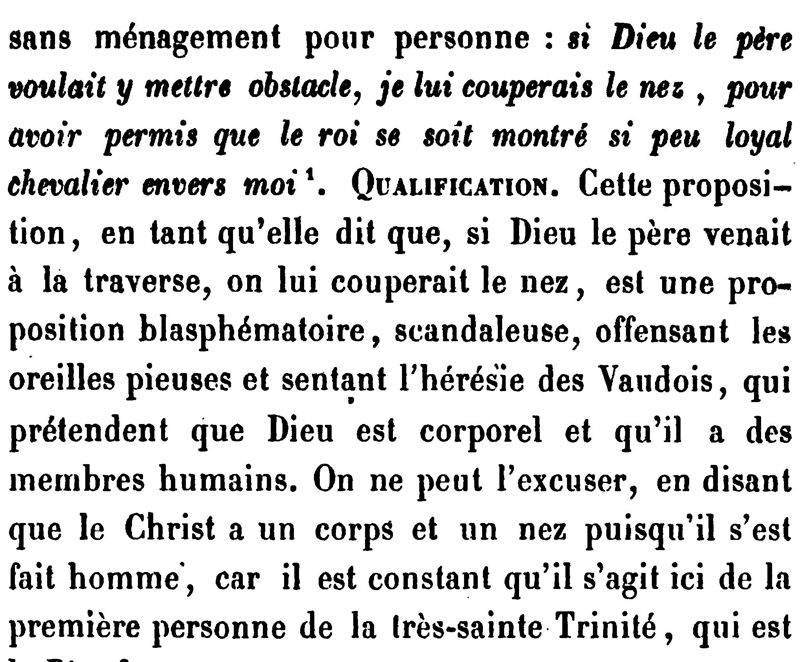
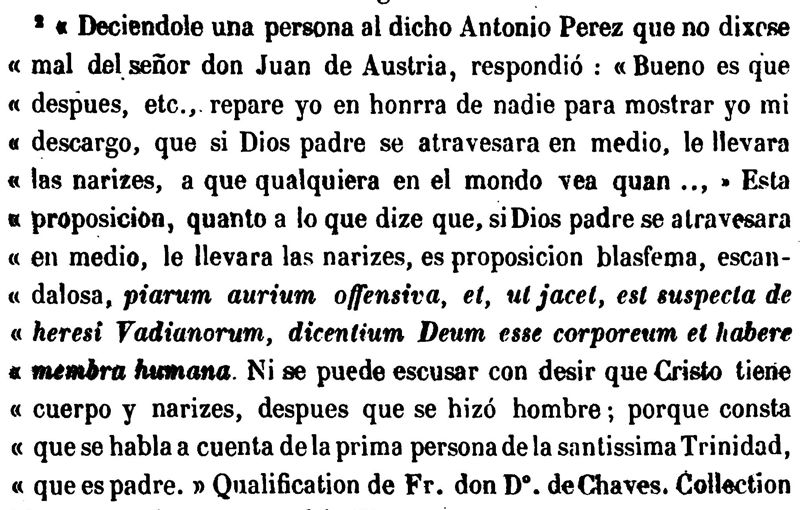

“Je lui couperais le nez” (p. 234)
French: 2nd ed. 1846, p. 234, scan n263, from the articles added to Pérez’s trial and their “qualification” by Fr. Diego de Chaves (so Mignet’s footnote, citing Llorente’s collection, vol. XIII). Mignet italicises Pérez’s words. Highlighted: what Lecky’s note reports.

[When someone told Antonio Pérez not to speak ill of Prince Don John of Austria, Pérez answered: Since the king has reproached me with twisting the sense of the letters I wrote and betraying the secrets of the council, I must clear myself] without sparing anyone: if God the Father tried to stand in the way, I would cut off his nose, for having allowed the king to behave so unlike a loyal knight towards me. Qualification. This proposition, in so far as it says that if God the Father got in the way one would cut off his nose, is a proposition blasphemous, scandalous, offensive to pious ears and smelling of the heresy of the Vaudois, who claim that God is corporeal and has human members. It cannot be excused by saying that Christ has a body and a nose since he was made man, for it is plain that what is meant here is the first person of the most holy Trinity, which is the Father.
Translation: this edition’s draft. The bracketed opening is from p. 233, read in the OCR only.
Original French
[Quelqu’un disant à Antonio Perez de ne point mal parler du prince don Juan d’Autriche, ledit Perez répondit: Depuis que le roi m’a fait le reproche de travestir le sens des lettres que j’écrivais et de trahir le secret du conseil, je dois me justifier (p. 234)] sans ménagement pour personne: si Dieu le père voulait y mettre obstacle, je lui couperais le nez, pour avoir permis que le roi se soit montré si peu loyal chevalier envers moi. Qualification. Cette proposition, en tant qu’elle dit que, si Dieu le père venait à la traverse, on lui couperait le nez, est une proposition blasphématoire, scandaleuse, offensant les oreilles pieuses et sentant l’hérésie des Vaudois, qui prétendent que Dieu est corporel et qu’il a des membres humains. On ne peut l’excuser, en disant que le Christ a un corps et un nez puisqu’il s’est fait homme, car il est constant qu’il s’agit ici de la première personne de la très-sainte Trinité, qui est le Père.

The censure’s Latin core reads: “piarum aurium offensiva, et, ut jacet, est suspecta de heresi Vadianorum, dicentium Deum esse corporeum et habere membra humana” (offensive to pious ears and, as it stands, suspect of the heresy of the Vadiani, who say that God is corporeal and has human members). Lecky (vol. II, ch. V, note 8): the Inquisitors said the words “partook of the heresy of the Anthropomorphites and of the Vaudois, who maintain that the Father has bodily parts.” Lecky’s “Anthropomorphites” is a fair gloss of the Latin definition; his “Vaudois” is Mignet’s rendering of “Vadiani”. See also Llorente, whose history Mignet cites for the trial.
Further down the rabbit hole
Sources that Lecky cites in the notes next to the ones that cite this page.
- Sarpi, Historia dell’origine, forma, leggi ed uso dell’ufficio dell’InquisizioneA Venetian friar on how churchmen changed their tune about princes
- Paramo, De origine et progressu officii sanctae inquisitionisWhy the dead are tried for heresy
- Michelet, Louis XIV et la révocation de l’Édit de NantesJurieu stands alone against Bossuet; the gentle Saurin works for Louis XIV
- Carena, De officio Sanctissimae InquisitionisThe Inquisition’s chapter on confessors who seduce their penitents
- Allen, Inquiry into the Rise and Growth of the Royal PrerogativeAn oath of non-resistance that outlived the Revolution by some thirty years
- An Homily against Disobedience and Wilful RebellionHell as the prison of rebels: the Church of England preaches obedience


Backlinks
Every place in Rationalism in Europe that links to this page (generated automatically when the site is built).
- Chapter V: note 8